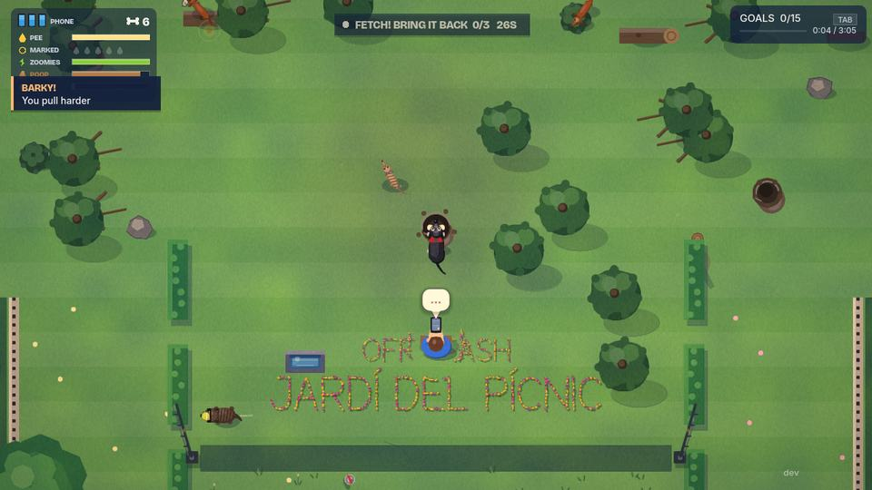

Les Atraccions
Coasters, queues and churros
A theme park of its own invention on the Costa Daurada, on a bright day: through the ticket gates, past a white fishing village, a boardwalk Wild West, a jungle with a log flume beside the path and the big coaster's loop. When the flume plunges, pull your human to the dry side before the wave crosses the walkway, then run free on the picnic lawn.
- Off-leash stop
- JARDÍ DEL PÍCNIC (Fenced dog yard)
- Beat the clock
- Under 3:05
Screenshots



Goals (15)
- Mark 5 spots
- Have 4 good long sniffs
- Get the phone home without a scratch
- Get yourself home without a bump
- Get your business bagged
- Bring the ball back 3 times
- Get your human home mostly dry
- Pull your human clear of the flume splash
- Beg a churro from the cart
- Bark the carousel into a spin
- Land an x3 trick combo
- Snatch the churro off the picnic grill
- Spell LEASH
- Find the hidden pernil
- Beat the clock (under 3:05)